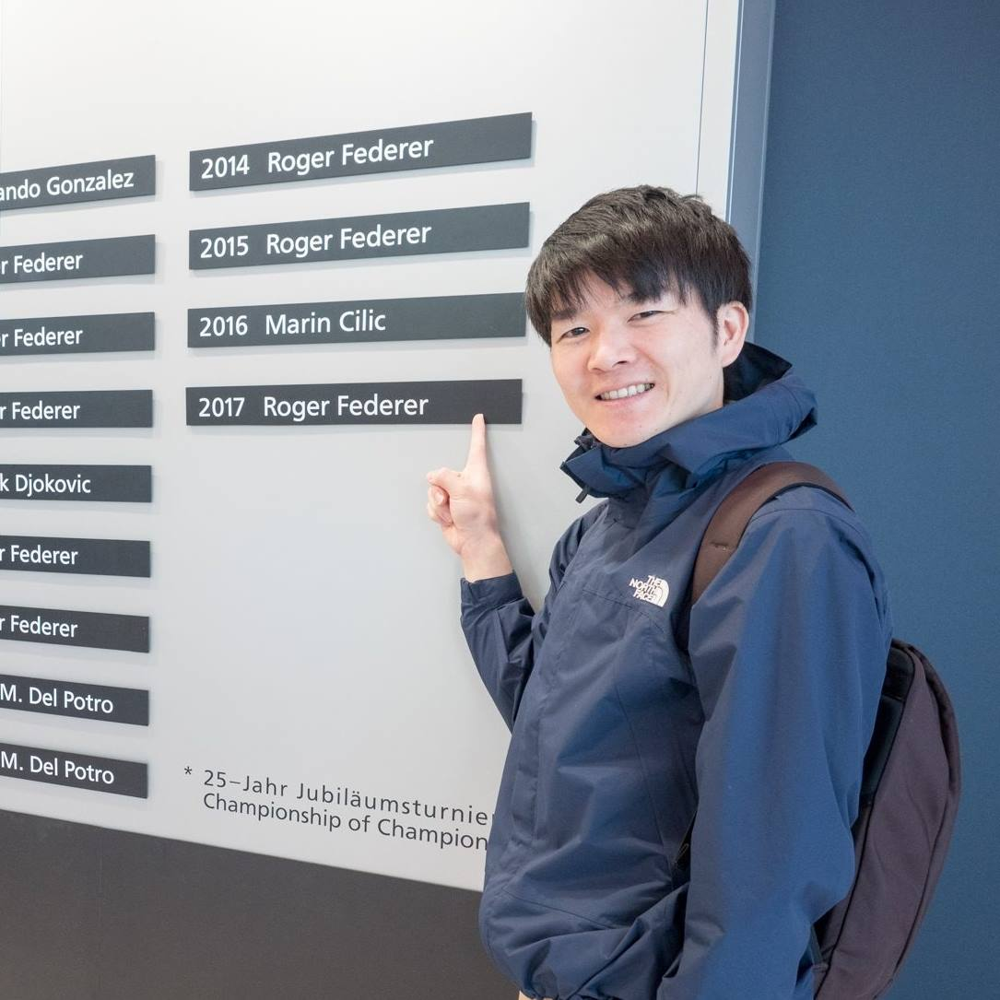

Software engineer with experience in machine learning systems and data engineering.
I've worked on LLM-based applications, time-series forecasting, and big data processing.
Work Experience
- Scientific Software Developer at Enthought G.K. (January 2025 - Present)
- Research Scientist at NTT, Inc. (July 2019 - December 2024)
- Research Scientist at NTT West, Inc. (July 2016 - June 2019)
- Researcher at NTT, Inc. (April 2013 - June 2016)
Education
- M.Eng., Yokohama National University, 2013
- B.Eng., Yokohama National University, 2011
Publications
- 応答時間を考慮したストリームデータクリーニング手法の検討 (DEIM2016) [PDF]
- MapReduceにおける頻出要素の分割による分散ソート高速化 (電子情報通信学会, 2015) [Link]
- カラム構造と圧縮によるHadoopからPostgreSQLへのロード高速化に関する実験と考察 (DEIM2014) [PDF]
- Reconfigurable Scripting Language with Programming Risk (IEEE ISSREW 2012) [DOI]
- ASPEN: 自動データ収集機能を備えた Web ベースプログラミング学習システム (情報教育シンポジウム2012) [Link]
- オンラインセキュリティ実験基盤 (夏のプログラミング・シンポジウム2011) [Link]